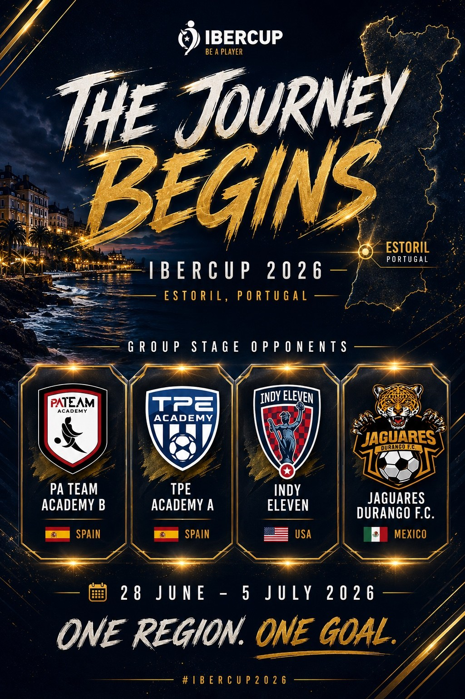

Global Experiences
International Tournaments
Selected squads representing the South West in overseas tournaments and elite football experiences.
Represent
International football experiences.
International tournaments give selected players the chance to travel, compete against teams from different countries and experience football in a completely new environment.
These opportunities are for players who demonstrate the level, commitment and attitude required to represent South West England Representative Football.

IberCup and beyond.
Our ambition is to create tournament experiences that challenge players, build confidence and create memories while supporting their long-term development.
Ask About Tournaments